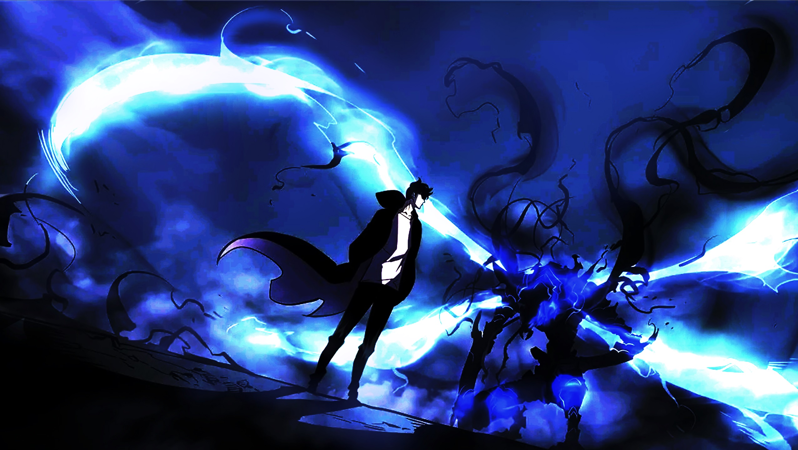
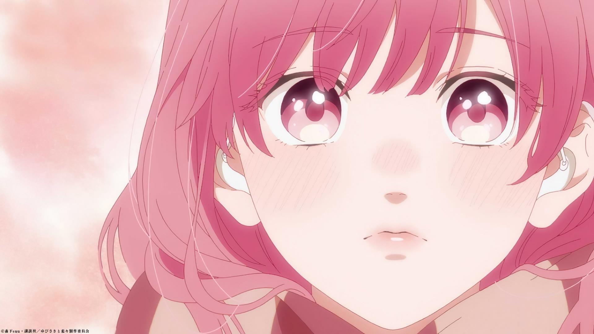

Sousou no Frieren
Some representative placeholder content for the first slide.

Kusuriya no Origoto
Some representative placeholder content for the second slide.

Tian Guan Ci Fu
Some representative placeholder content for the third slide.

Solo Leveling
Some representative placeholder content for the fourth slide.

Yubisaki no Renren
Some representative placeholder content for the fifth slide.